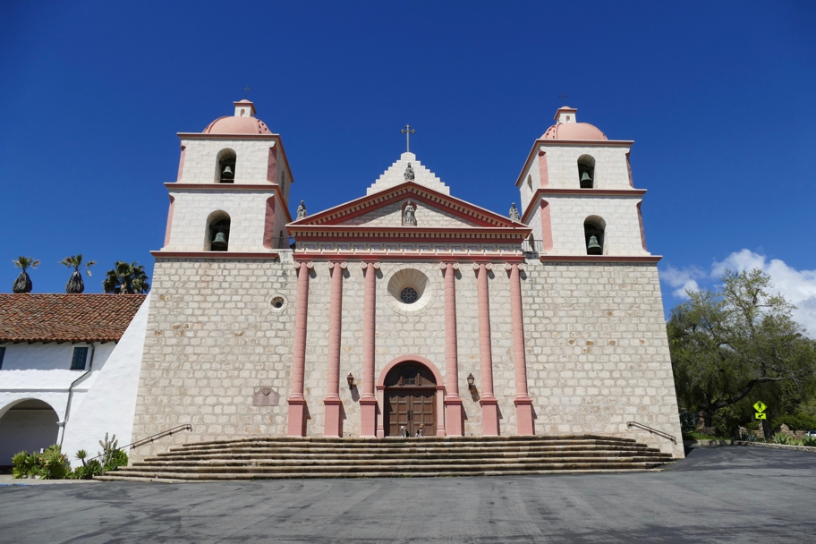

This is the only mission to have operated continuously as a church since its founding. Its museum is the best we've been in. Afterwards we picnicked on the grounds, including a bottle of local sauvignon blanc from the gift shop. It was good to be back in California.
California Halley Beagle Santa Barbara Wallace Beagle